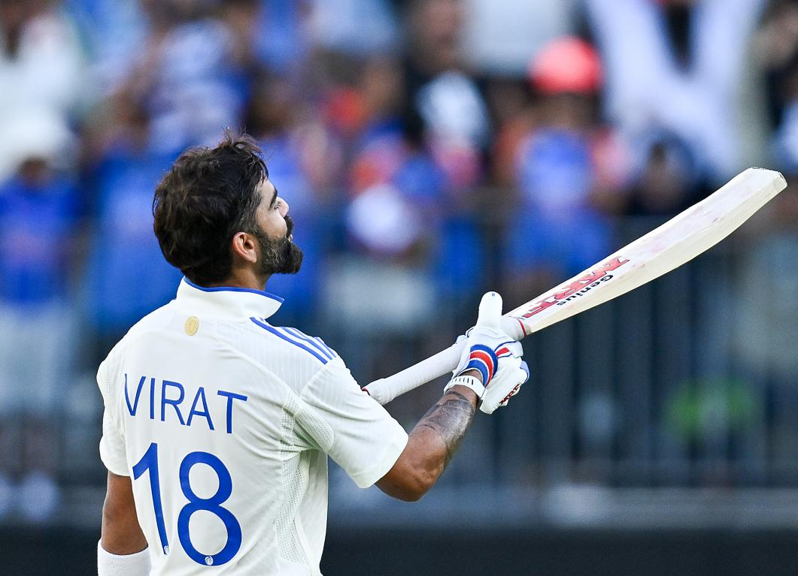
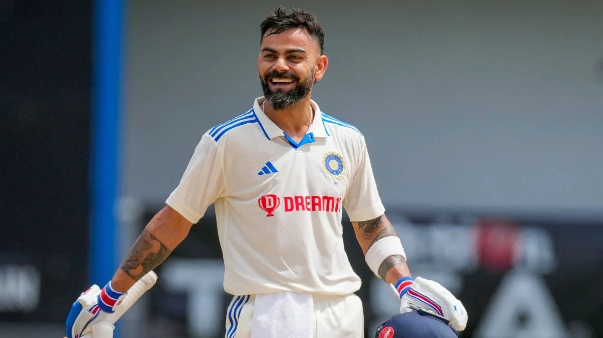
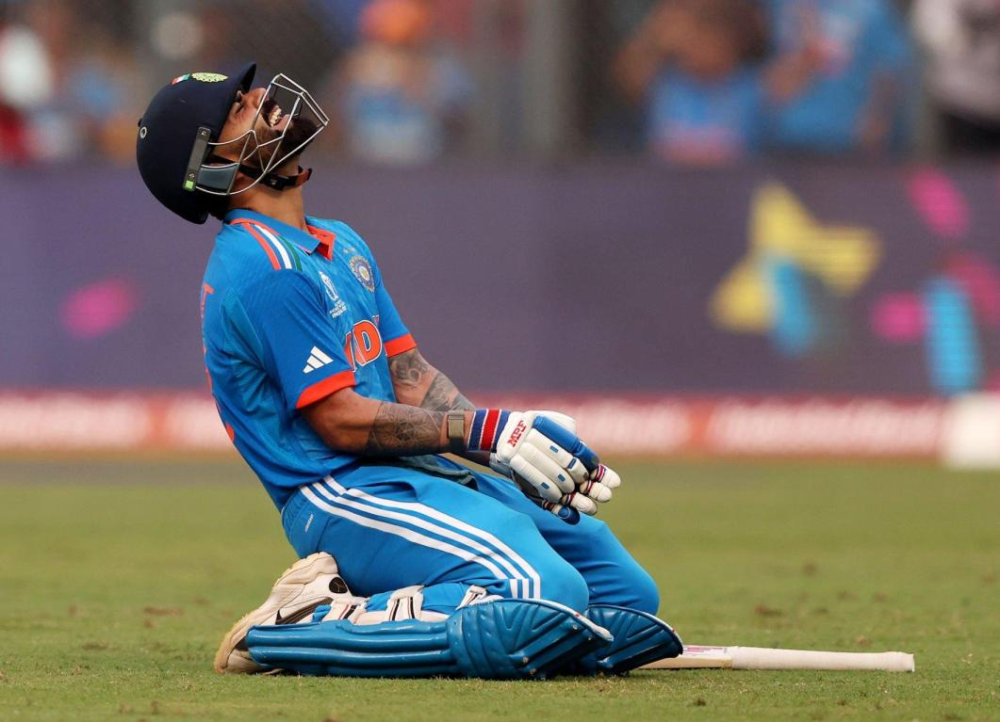
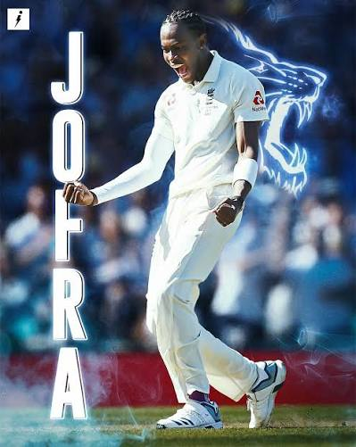
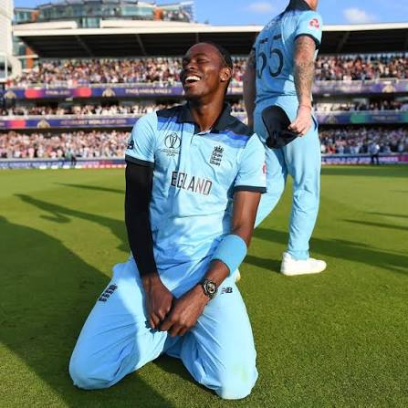
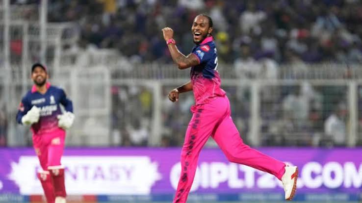
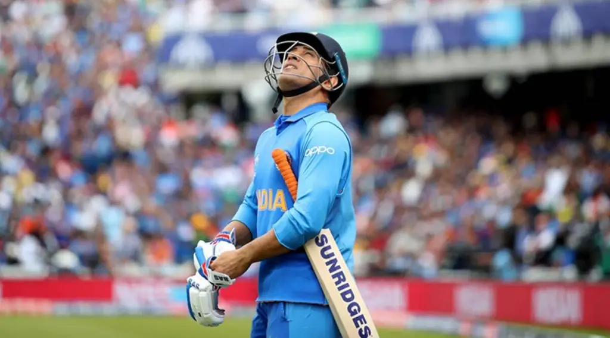
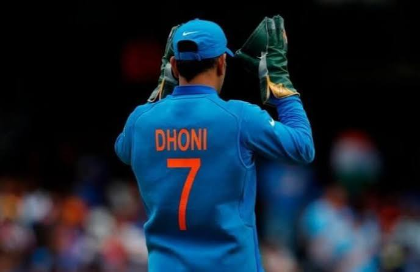

Personal Life & Background
- Full Name: Virat Kohli
- Born: November 5, 1988 (Delhi, India)
- Parents: Late Prem Kohli (Criminal Lawyer) & Saroj Kohli
- Family: Married to actress Anushka Sharma; Children: Vamika & Akaay
- Childhood Coach: Rajkumar Sharma (West Delhi Cricket Academy)
- Nickname & Jersey: Popularly known as 'Cheeku' | Jersey Number: 18
- Youth Career: Captained India U-19 team to victory in the 2008 ICC Under-19 Cricket World Cup.

Major Career Achievements
- World Cup Double: ICC ODI World Cup Winner (2011) & ICC T20 World Cup Winner (2024).
- 50 ODI Centuries: First player in cricket history to reach 50 One Day International centuries, surpassing Sachin Tendulkar.
- ICC Cricketer of the Decade: Awarded Sir Garfield Sobbs Trophy for ICC Men's Cricketer of the Decade (2011–2020).
- National Honors: Recipient of the Arjuna Award (2013), Padma Shri (2017), and Khel Ratna Award (2018).
- IPL Icon: Highest run-scorer in the history of the Indian Premier League (IPL) with Royal Challengers Bengaluru (RCB).

Records to Target & Future Goals
- Most International Centuries: Currently chasing Sachin Tendulkar's legendary benchmark of 100 international centuries.
- 27,000+ International Runs: Fastest batsman in history to reach major run milestones across formats.
- Most Test Centuries for India: Aiming to climb higher in the all-time list for most Test centuries by an Indian batter.
- Highest All-Time Runs in WTC: Continuing to build on his position as one of the leading run-scorers in the World Test Championship.

Personal Life & Background
- Full Name: Jofra Chioke Archer
- Born: April 1, 1995 (Bridgetown, Barbados)
- Parents: Frank Archer (English) & Joelle Waithe (Barbadian)
- Nationality & Citizenship: British citizenship held through his father.
- Early Career: Played for West Indies U-19 before moving to England in 2015 to play for Sussex County.
- Role & Jersey: Express Fast Bowler (Pace 150+ km/h) | Jersey Number: 22

Major Achievements
- ICC World Cup Winner (2019): England's leading wicket-taker in the tournament with 20 wickets.
- IPL Most Valuable Player (2020): Won the MVP award in the Indian Premier League taking 20 wickets for Rajasthan Royals.
- Sensational Test Debut (2019): Took 22 wickets in his maiden Ashes series against Australia at an impressive average of 20.27.
- Rapid Pace Milestone: One of the fastest bowlers in modern cricket, consistently clocking speeds over 150 km/h (93 mph).

IPL Rise, World Cup Heroics & Injuries
Jofra Archer shot into global prominence during the 2018 IPL auction when the Rajasthan Royals (RR) made a big splash by picking up the raw, fast-bowling sensation for ₹7.2 crore. His lethal pace and yorkers instantly made him a core asset for Rajasthan Royals. Just a year later in 2019, after qualifying for England, Archer delivered an unforgettable performance at the 2019 ICC World Cup, taking 20 wickets and famously bowling the historic Super Over in the final against New Zealand to hand England their maiden 50-over World Cup title. Despite facing severe career setbacks due to recurrent elbow stress fractures and back injuries that kept him sidelined for long periods, Archer's incredible resilience and world-class pace remain a defining story in modern cricket.

Personal Life & Background
- Full Name: Mahendra Singh Dhoni
- Born: July 7, 1981 (Ranchi, Jharkhand, India)
- Parents: Pan Singh & Devaki Devi
- Spouse: Sakshi Dhoni | Daughter: Ziva Dhoni
- Early Career: Worked as a Travelling Ticket Examiner (TTE) at Kharagpur Railway Station before joining national cricket.
- Nickname & Jersey: 'Mahi', 'Captain Cool', 'Thala' | Jersey Number: 7
.jpg)
Major Achievements
- ICC Trophy Trifecta: Only captain in world history to win all three major ICC trophies (2007 T20 WC, 2011 ODI WC, 2013 Champions Trophy).
- IPL Success: Led Chennai Super Kings (CSK) to 5 Indian Premier League titles.
- Lightning Stumps: World record holder for the fastest stumping in international cricket (0.08 seconds).
- Most Dismissals for India: Highest number of stumpings and catches by an Indian wicketkeeper across all formats.
- National Honors: Honored with Rajiv Gandhi Khel Ratna (2007), Padma Shri (2009), and Padma Bhushan (2018).

Army Service & World Cup Glory
Mahendra Singh Dhoni’s legacy extends far beyond the cricket field. As a skipper, he led India to landmark victories in the 2007 ICC World Twenty20 and sealed the 2011 ICC ODI World Cup with his iconic winning six in Mumbai. In 2011, his deep devotion to the nation earned him the honorary rank of Lieutenant Colonel in the Indian Territorial Army with the Parachute Regiment. In 2019, he took a sabbatical from cricket to complete a two-week training deployment with the Parachute Regiment in Jammu and Kashmir. His discipline, leadership under pressure, and tactical mastermind solidify his place as one of India's greatest sporting legends and patriotic icons.